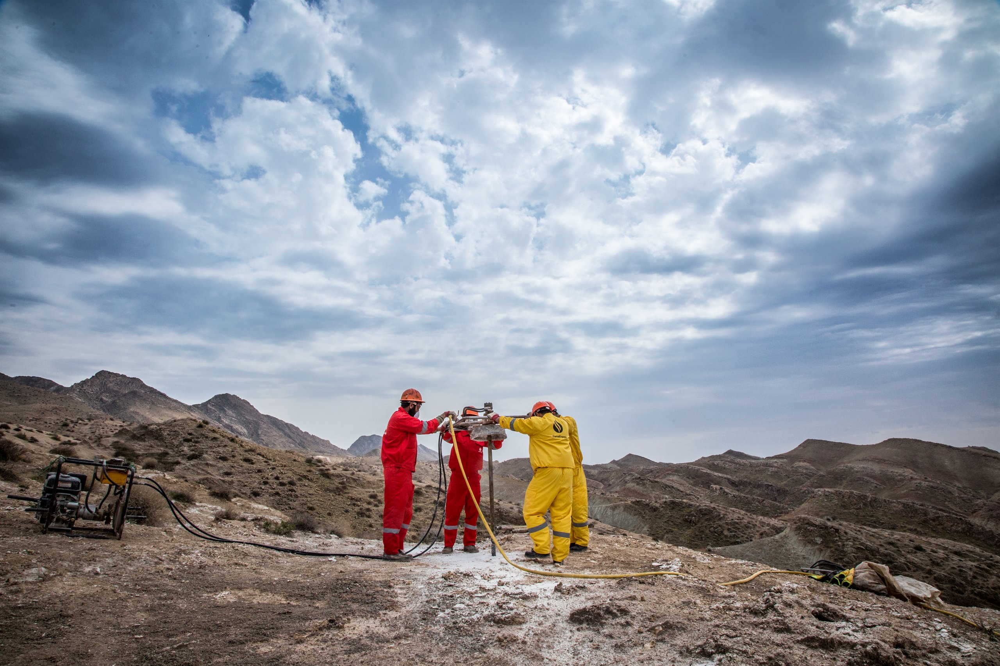
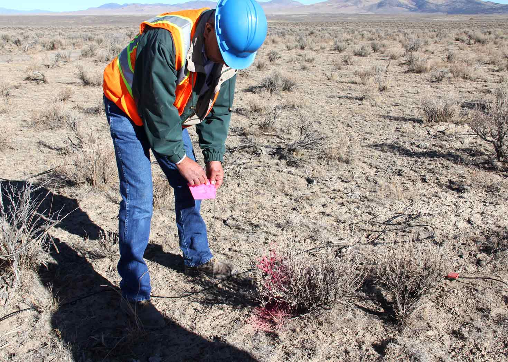

Porque cada proyecto es una nueva tierra
Conoce el subsuelo antes de construir, perforar o invertir.
Exploración geofísica no destructiva para geotecnia, agua subterránea, minería e infraestructura. Te atiende directamente la especialista, desde la cotización hasta el informe.
Qué hacemos
Cinco métodos para responder cualquier pregunta sobre el terreno
Cada método "ve" una propiedad distinta del subsuelo. Elegimos y combinamos el adecuado según lo que necesites saber: dónde está el agua, qué tan firme es el suelo, a qué profundidad está la roca o qué hay enterrado.
Por qué con nosotros
Rigor técnico, trato directo y resultados que sí se entienden
Una empresa joven con una ventaja clara: quien te cotiza es quien planea, mide e interpreta tu estudio. Sin intermediarios, sin informes de plantilla.
- Propuesta a la medida. Recomendamos solo el método que resuelve tu problema, sin vender de más.
- Equipo calibrado y control de calidad en campo. Repetimos lecturas dudosas antes de irnos del sitio.
- Informe claro. Secciones, planos y conclusiones pensadas para ingenieros, constructores y autoridades.
- Cobertura nacional. Nos trasladamos a donde esté tu proyecto, con viáticos transparentes.

¿Para qué sirve?
Aplicaciones por tipo de proyecto
Cada tarjeta indica qué estudios se usan normalmente. Si tu caso no aparece, cuéntanos y te orientamos sin compromiso.
Cómo trabajamos
De tu solicitud a un informe útil, en cinco pasos
Solicitud
Nos compartes ubicación, objetivo y, si tienes, planos o fotos del sitio.
Propuesta
Recomendamos el método, la cantidad de líneas o puntos y te enviamos la cotización.
Campo
Adquisición de datos con equipo calibrado y control de calidad en sitio.
Procesamiento
Modelos 1D/2D, secciones y correlación con la geología y sondeos disponibles.
Informe
Reporte con metodología, resultados, interpretación, conclusiones y recomendaciones.
¿Tienes un proyecto? Platiquemos.
Cuéntanos qué necesitas saber del terreno y te decimos qué estudio conviene, cuánto tarda y cuánto cuesta.